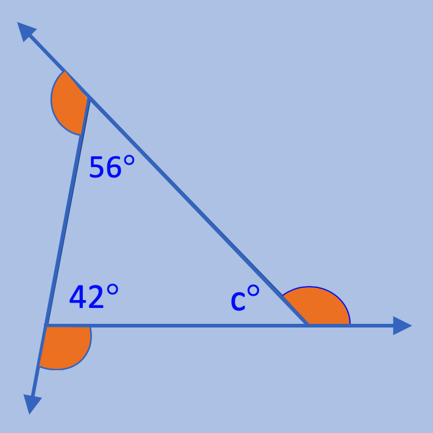

The Exterior Angles of any Polygon always sum to equal 180°

The three orange angles are called the Exterior Angles.
There is one exterior angle at each vertex of the triangle.
To calculate the missing degrees of a specific Exterior Angle,
subtract the degrees of the angle inside the triangle ,that is
next to the exterior angle, from 180°.
The 2 adjacent angles form a Linear Pair, or a pair of angles
that form a straight angle. Since a
straight angle is an 180° angle, subtracting the known
angle from 180° will give you the measures of each exterior angle.
This will get you the answer.
You can also add two exterior angles' degrees, then subtract the total from 360° to get the third exterior angle's degree.
To calculate a missing angle's degrees if the angle is inside of a triangle:
add the two known angles inside the triangle, then subtract the total from 180º.
In the example above, ⦟c° = 180 - (56 + 42)
or ⦟c° = 180 - 56 - 42 will generate the same answer.
m⦟c = 82°